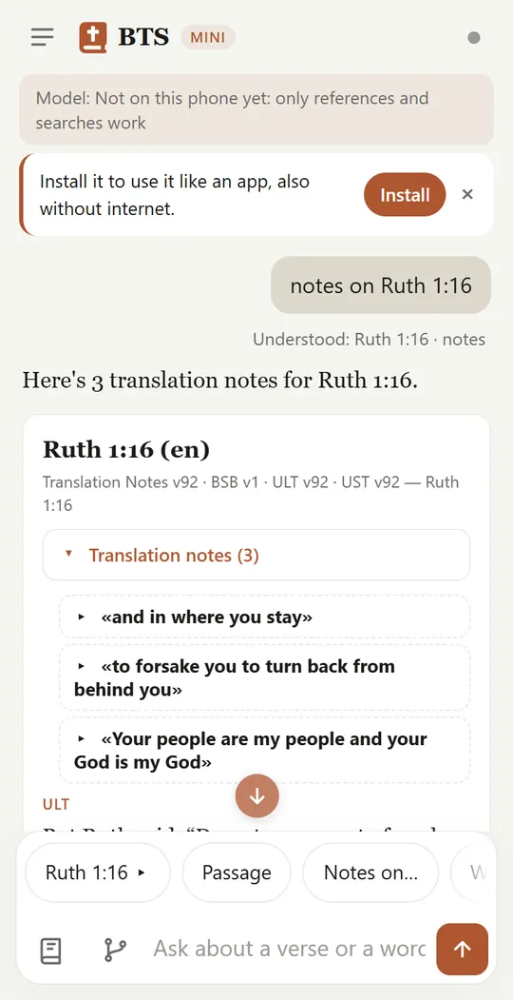
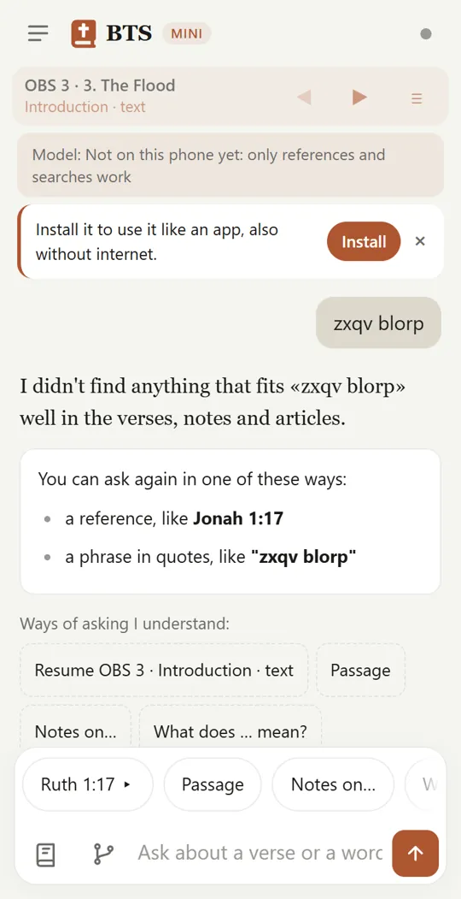
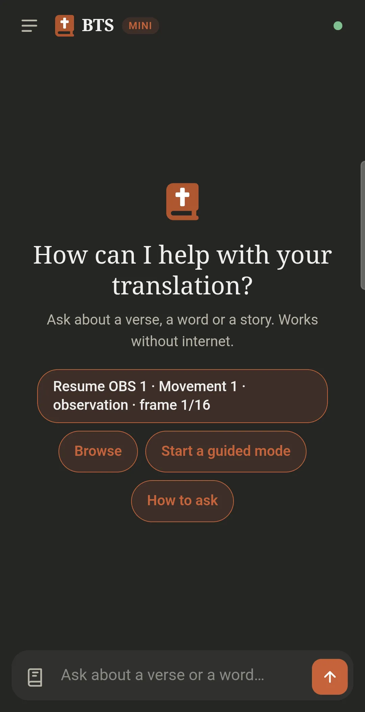
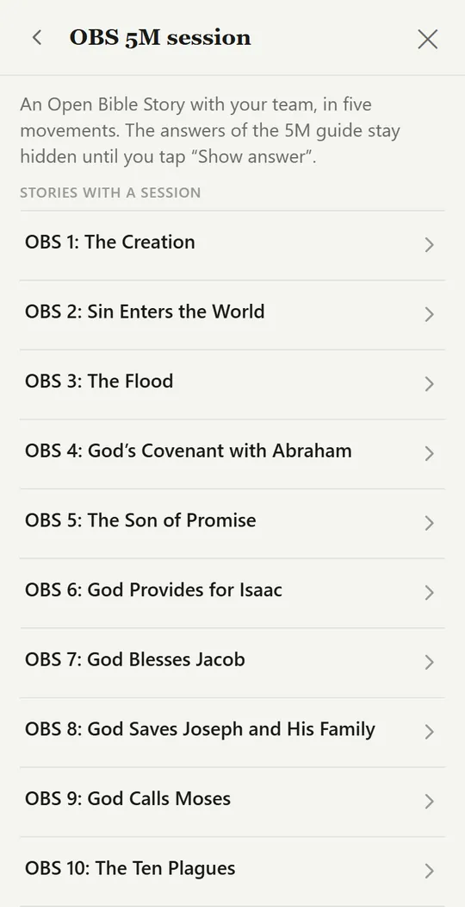
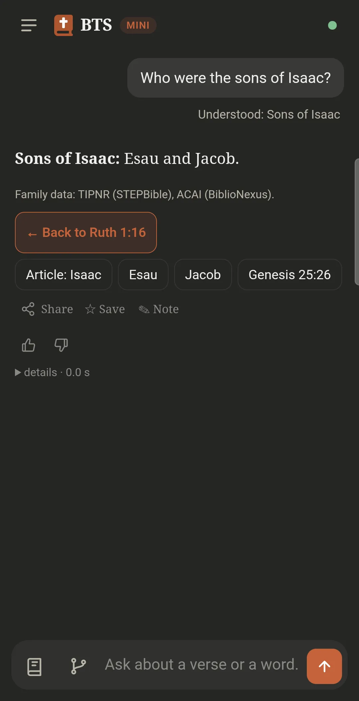
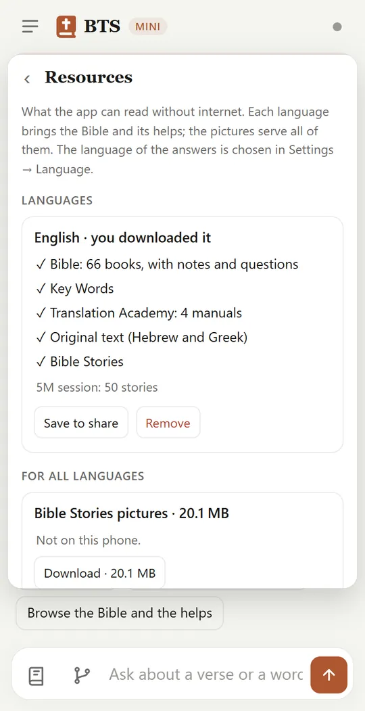
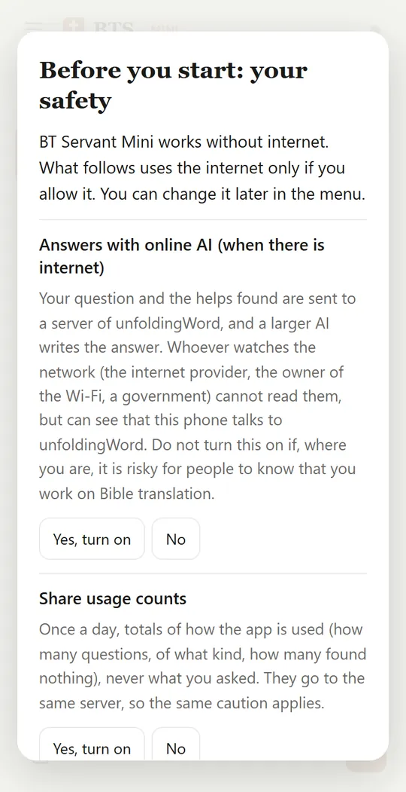

Test version (alpha) · Android 8 or newer
The translation helps on your phone, in your language.
BT Servant Mini is an app for people who translate the Bible, learn to translate or guide a team. Download your language once. After that, ask your translation questions without internet: every answer comes from the helps themselves and says where it comes from. (The lite version also downloads a reader of about 290 MB for questions in your own words.)
Download once, then ask without internetScreens in 6 languagesiPhone: in testing

What is inside
The helps of unfoldingWord, and some open data
unfoldingWord publishes most of these helps in Door43, its online library. Mini brings the ones that exist in your language to the phone. The credits are at the bottom of the page.
The Bible in two forms
One close to the original (literal) and one easy to understand (simplified).
Translation notes
What each difficult phrase means and how it can be translated.
Comprehension questions
To check that a translation is understood.
Key words
Explanations of terms such as «grace» or «redeemer», with the verses where they appear.
Translation Academy
Short lessons on how to translate.
Open Bible Stories
50 stories with pictures, and the study in Five Movements for groups, in the stories and languages that have it.
Hebrew and Greek
The original text with an analysis that tells you, for example, whom «he» refers to.
People of the Bible and their families
Who is named in a verse, and who was whose son, wife or brother.
It downloads in parts, only what you need, and a language can pass from one phone to another as a file.
How it answers
Your question becomes the text of the helps
You write in your language
A verse (Ruth 1:16), a word, or a short question.
The phone finds what you mean
A verse, a word, a lesson or a story, and it looks for it in what you downloaded.
It shows the helps, with their source
You read the text of the helps themselves, with the name and version of each. Mini does not make up content: the text is the helps' own.
Under each answer, buttons offer the next step: the next verse, the note, the lesson. If Mini does not find something, it says so and suggests another way to ask. Only the optional Online AI, if you turn it on, writes an explanation, and it is always marked.

What would you like to do today?
Mini works alongside real tasks, not only single questions
When you open the app, it asks what you want to do. You can skip it and come back from the menu.
- I'm translating a book. Mini starts with the book's introduction, then goes section by section with its notes, key words and questions.
- I want to learn to translate. Short Translation Academy lessons, one at a time, in the order of the manual. You can start with the topics that trip people up most.
- I want to look up a passage or a word. Ask in the chat and see how to ask. Or choose «Just explore» to browse the Bible book by book, without typing.

With your team
A story session with a group, even without a signal
The facilitator leads the session from one phone. Each person uses Mini on their own phone: there is no shared session over the network.
- Five Movements. One of the Open Bible Stories (in the app: «Bible Stories») in five steps: read, observe, discuss, draft, check. Today the sessions exist in English (all 50 stories) and Indonesian (stories 1–16); other languages may not have them yet, and then the stories are there without the session.
- The answers of the guide stay hidden until you tap «Show answer», so the group thinks first.
- The marks of the final review («Understood» or «Confusing») stay on that phone, and you can pick the session up another day, as long as you keep your conversations.
- The pictures of the 50 stories download once (about 20 MB) and then show without internet.
- Pass your language to each phone. Save it as a file («Save to share»), pass it to another phone (Bluetooth, an SD card, a cable or any app you use) and open it there («Open a file you received»). Only one phone needs a connection to download it.

What you can ask
The ways of asking that work
| Ask (examples) | What you get |
|---|---|
| «Jonah 1:3» | The literal and the simplified Bible, the notes, the questions and the key words |
| «Help me translate Jonah 1:3» | The note, an alternative way to say it, how the simplified version says it, and the related lesson |
| «What does redeemer mean in Ruth 4?» | The explanation of the word and the verses where it appears |
| «How do I translate a metaphor?» | The Translation Academy lesson and the related ones |
| «The story of Noah» | The story, with its pictures (if you downloaded them) and the Bible passages it comes from |
| «Who is “he” in Ruth 2:4?» | Whom it refers to, according to the Hebrew text |
| «How many notes does Jonah have?» | The count, with buttons to see its verses and notes |
| «Who were Isaac's sons?» | The names, with buttons to each person, their verses and their stories |
Questions in your own words are interpreted by a small reader that works on the phone (in the app: «reading model»). It comes inside the full version; in the lite one you download it once (about 290 MB). Without it, references and searches by words still work.
To be understood better
- Write the book and the chapter when you can.
- Use words that are in the text.
- To look for a story, name its main person («Noah», «Joseph», «David»).
- While you type a book, Mini offers its name, then the chapter and the verse.
Everything is linked
From a verse to its people, from a person to their family
Ask «Who were Isaac's sons?» and Mini answers with names and buttons: to each relative, to the verses and to the person's article.
- Under a verse or a story frame, «People here» shows who is named there.
- Under the article of a person, it adds their family.
- When several people share a name, it asks which one you mean.
- It never says «X had no children»: it says the data does not name anyone.
Family data: TIPNR (STEPBible, Tyndale House), ACAI (BiblioNexus) and Theographic. Each answer names its sources.

Without internet
After you download your language, it works in airplane mode
| Needs a connection | Does not need one |
|---|---|
| Downloading the app, your language, the reader and the pictures (or receiving them as a file) | Asking, browsing, the step-by-step guides, the team sessions and your notes |
| Online AI, if you turn it on | |
| Checking for a new version, sending a report or the usage counts (if you turned them on) |
Sizes, about
- Lite version: 18 MB, plus your language.
- Full version: 374 MB, with the reader and five languages inside (English, Arabic, Hindi, Indonesian and Spanish), without the story pictures.
- The reader: about 290 MB, optional.
- The story pictures: about 20 MB.
Which one? If you will have a signal at least once, the lite version. If not, the full version or a file from another phone. Downloads can be resumed if they are cut.

Your privacy
What stays on your phone and what leaves it
Stays on the phone
Your notes, your bookmarks and your conversations. You can choose not to save conversations (then bookmarks and notes are also erased when you close the app), and erase everything.
Leaves only if you turn it on or send it
Online AI: your question, the helps found and the last messages; never your notes. A report: you see exactly what is sent before you send it. It can include the conversation (you choose), is reviewed and cleaned of personal data, and may be used to train the app's model. Usage counts: optional, only totals per day (plus the app version, the languages on the phone and its memory class), without the text of your questions.
Who can see that you use it
When you download or use Online AI, whoever watches the network (the provider, the owner of the wifi, a government) can see that the phone talks to unfoldingWord, even if they cannot read the content. Before you turn on Online AI or usage counts, the app warns you.
If someone has your unlocked phone
They can read what is saved. On Android there are also a neutral name and icon for the app; a PIN and not keeping conversations exist everywhere. None of them encrypts what is saved. The details are inside the app.

What to expect
What Mini does not do today
- It does not chat freely or give theological opinions of its own.
- It does not translate for you: it gives you notes, alternatives and the simplified version.
- It answers with what you downloaded. If it does not find something or a book is missing, it says so.
- It understands follow-ups to the previous answer («and the notes?»), but it does not remember the whole conversation. The Map lets you go back to any point.
- It may not understand spelling mistakes or a story told with other words.
- This is a test version. If an answer does not help, tap «Not what I expected» and tell us. Inside the app, the screen «What this app can and cannot do» says it too.
Languages
Screens and questions in six languages
English, Spanish, French, Indonesian, Hindi and Arabic (written right to left). The helps come in the languages below.
| Language | Bible books |
|---|---|
| English | 66 (all) |
| Arabic | 66 (all) |
| Hindi | 33 |
| Indonesian | 9 |
| Spanish (Latin America) | 6 |
Counted on Mini's server on 19 November 2026. Each language also brings the notes, key words, Academy lessons and stories that unfoldingWord has published in it; notes and questions may cover fewer books than the Bible text (Hindi notes, for example, are very limited, and Hindi has no comprehension questions yet). French has screens and questions, but no content of its own yet. More languages will come as their helps are published.
Also available from a test server: Bengali (16 books), Gujarati (23), Nepali (30), Odia (25), Telugu (25) and Persian (8).
If your language lacks the notes, questions or introduction of a book, Mini shows them from another language you have downloaded and says so.

Online AI, if you want it
Optional, and off when you start
With internet and only if you turn it on, a large model on a server reads your question and explains in prose what the phone found, and only that.
- You turn it on in the settings, after reading the security notice.
- It is marked «Online AI», and the helps stay under it as its sources, so you can check it.
- It sends your question (first to read it, then to write the explanation), a short note about the previous question, the helps found and the last four messages. It may ask you to sign in with Google first.
- There is a daily limit. Without internet, or when the limit is reached, Mini answers from the phone as always.
- It works on Android and in the browser, not in the iPhone app.
Download · version 0.13.0 alpha
Choose your version
Android 8 or newer, on a 64-bit (arm64) phone. Installing one replaces the other and keeps your conversations. It is free; asking needs no account.
Lite
18 MB
Starts small. On first launch you choose your language and it downloads; the reader (about 290 MB, optional) can be downloaded too, or loaded from a file.
Download liteSHA-256 6adf407aafbf1047a2e4c01cf17bea7b2f37e1d2149c8646e34a847e78dca5a6
Full
374 MB
The reader and five languages inside (English, Arabic, Hindi, Indonesian and Spanish). Works without internet from the first launch.
Download fullSHA-256 b20c85398b94fa87b93184f030fe423c8a2d624aa7acea1914bb2219f982c056
Browser
Nothing to install
Open it in your browser and add it to your home screen. The first time you use it, it needs internet to get the reader (about 290 MB) and your language.
Open in the browseriPhone
In testing
The iPhone version is being tested on TestFlight, Apple's testing service. It has no Online AI and no neutral name and icon mode. Want to try it? Ask for an invitation. The request opens a public GitHub issue: do not write your Apple ID email in it, we will reply there to arrange it privately.
Ask for an invitationYou need a GitHub account to ask.
Three steps: install, choose your language, ask. Download the APK on the phone, allow installing from that source when Android asks, and open it.
This is an alpha for testing. Language downloads come from unfoldingWord's servers and are signed, so the phone checks them. While we prepare the final servers they can change; what you already downloaded keeps working.